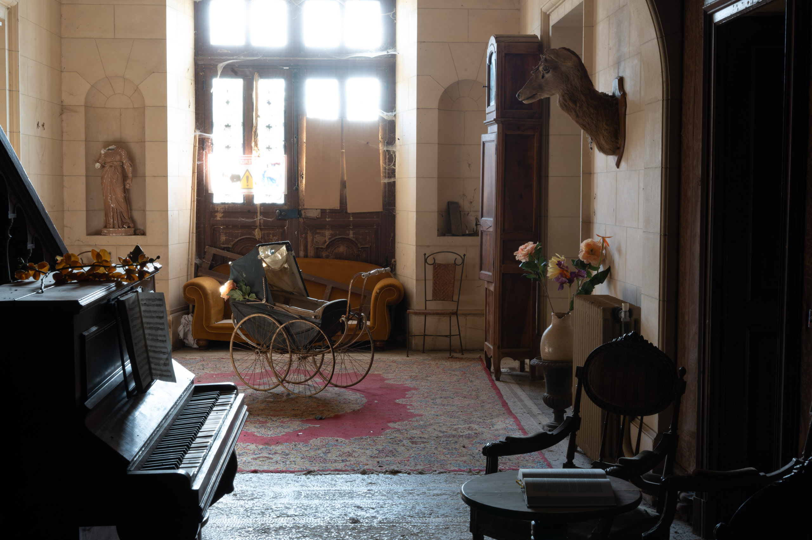
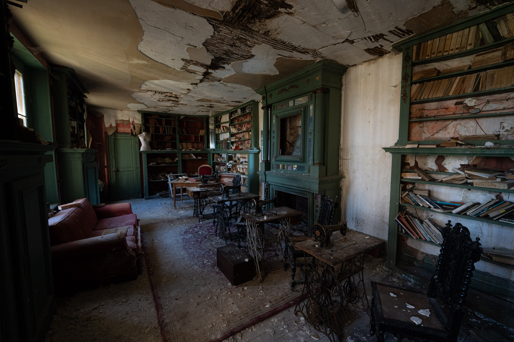
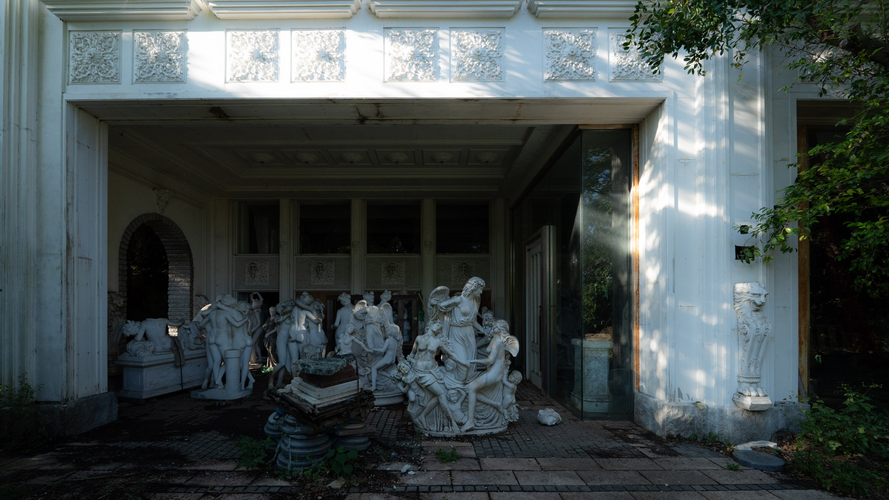
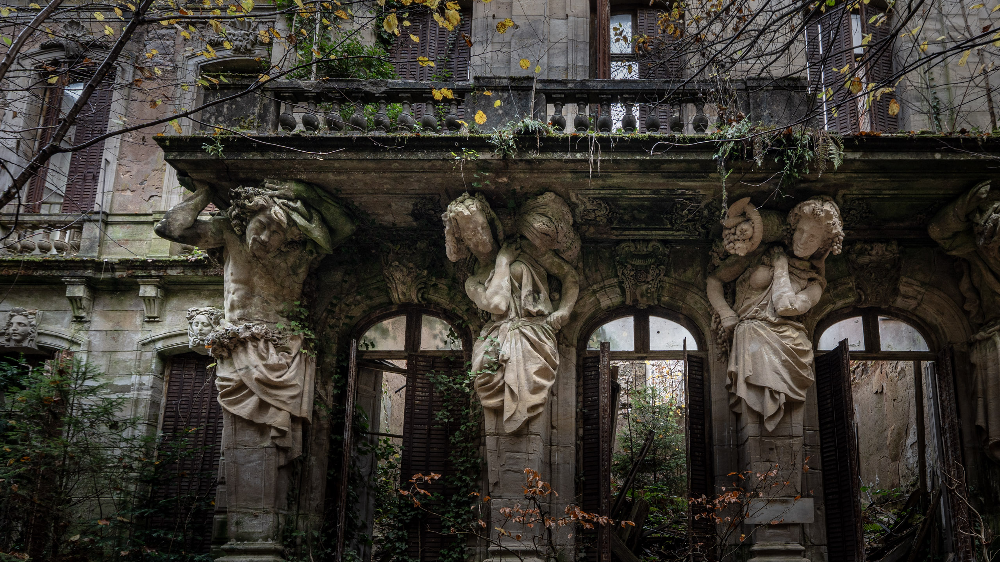
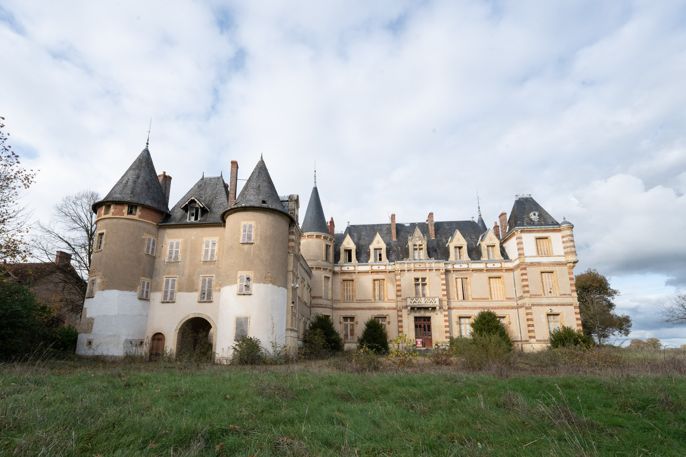
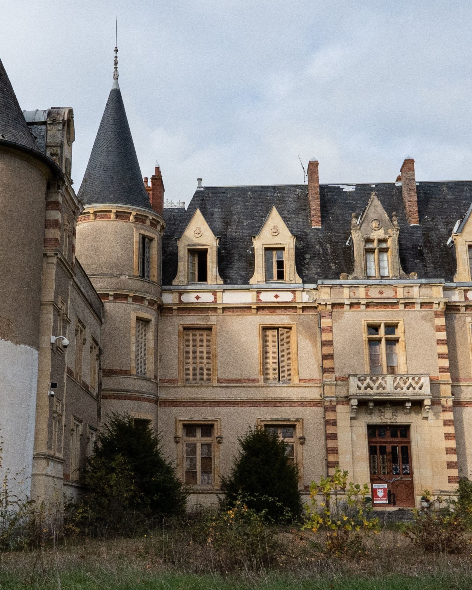
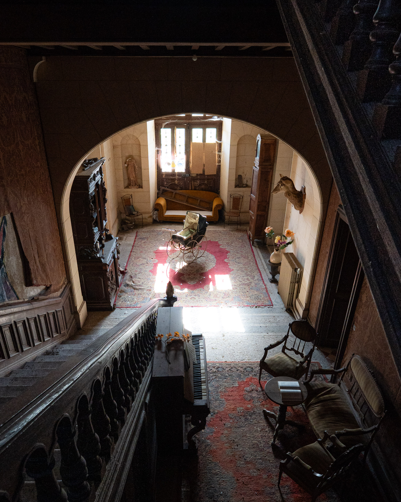
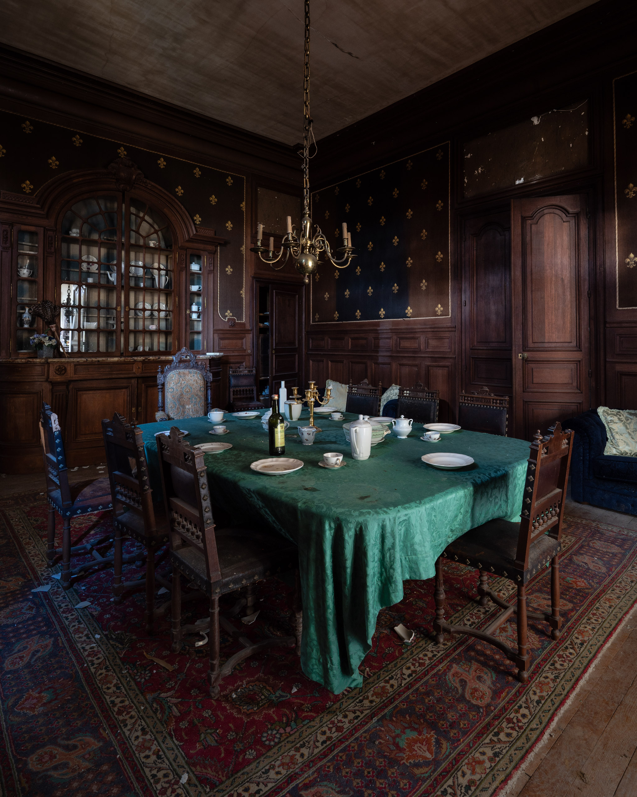
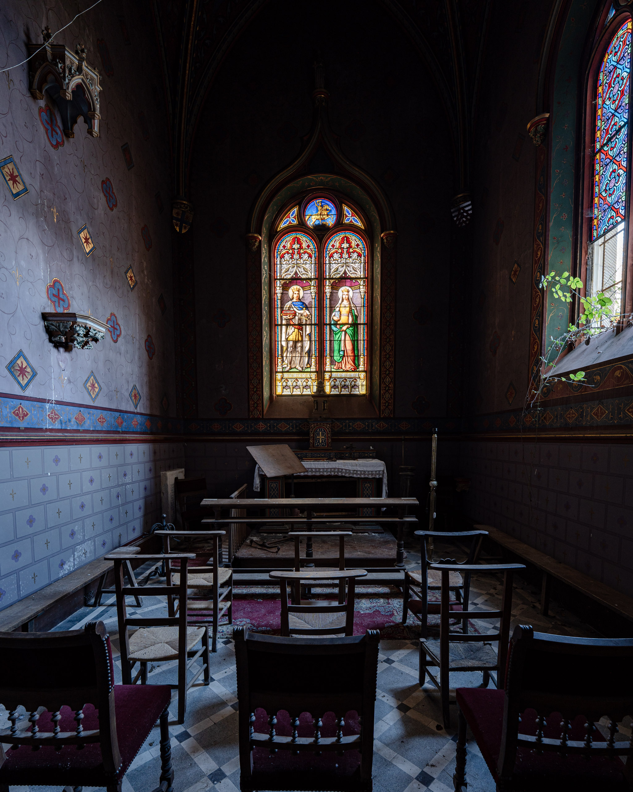
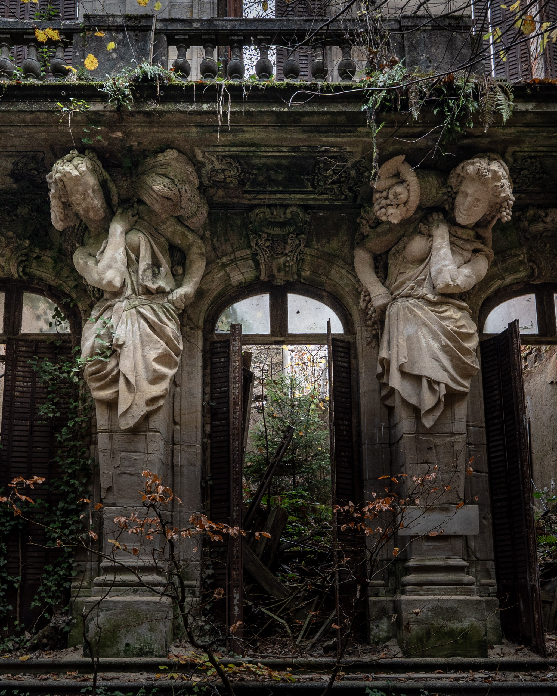

一般解放
幽谷に佇むシランス城の主要エリアを巡る基本コースです。14世紀から続く精緻な石造建築と、城を包み込む深い霧、そして歴史の流転を肌で感じていただけます。初めて来館される方におすすめの、自由散策プランです。
- 自由散策（時間制限なし）
- 主要エリア・庭園の公開
- 当日窓口での受付可能




博物館では味わえないリアルな歴史体験
Expérience
私たちはこの貴重な建築を保全し,多くの人々に体験してもらうことを使命としています
数々の歴史を残したハプスブルク家の生活の跡シランス城の魅力を伝える公式サイトです。

数々の光り輝く歴史を築いたハプスブルク家の直系分家、ハプスブルクシュタイン一族。 彼らが14世紀中頃、人里離れた幽谷の断崖に礎石を置いたのが、この城の始まりです。 一時は戦を癒やす名目的医療スパ、および帝国同盟の戦略を巡らせる「沈黙の盟約」の秘密会議地として栄華を極めました。しかし18世紀後半、戦乱の流転とともに城主一族が去ったのち、永い眠りについたこの地は精緻な石造建築と強靭な樹木、 そして深い霧が優美に溶け合い、いつしか人々はそこを畏敬を込めて「Château du Silence（シランス城 ＝ 静寂の城）」と呼ぶようになりました。
ハプスブルクシュタイン一族の歴史を体感する、3つの見学コースをご用意いたしました。
城内は自由に撮影いただけますが、周囲へのご配慮と文化財保護のため、フラッシュ撮影は一律で禁止とさせていただいております。
幽谷に佇むシランス城の主要エリアを巡る基本コースです。14世紀から続く精緻な石造建築と、城を包み込む深い霧、そして歴史の流転を肌で感じていただけます。初めて来館される方におすすめの、自由散策プランです。
専属の歴史ガイドが同行し、普段は立ち入ることができない「沈黙の盟約」が交わされた秘密会議地や、帝国の医療スパ跡地へとご案内します。ハプスブルクシュタイン一族が歴史の裏で果たした役割を深く紐解く、特別な没入体験です。
月明かりと最小限の灯りのみが灯る、漆黒のシランス城を巡るナイトツアーです。「沈黙の盟約」が眠る夜の会議場や、深い雾に包まれた中庭を歩きながら、五感を研ぎ澄まして城の「息遣い」を体感する、少しスリリングで幻想的な夜の特別公開です。
「沈黙の城」と呼ばれるこの場所には、数々の隠された物語が眠っています。霧深い庭園から非公開の会議室まで、シランス城の全容を紐解くための歩き方をご案内します。

14世紀中頃の堅牢な石造りの基盤に、ルネサンス期の優美な息吹が融合したシランス城の正門。かつて一族の栄華を象徴した円形の吹き抜け空間には、当時の細密な石彫意匠が色濃く残されています。中央に静かに佇む乳母車は、流転する時代の記憶を今に伝える貴重な遺物です。

この城の入口となる玄関は円形の吹き抜けと美しい家具が織りなす空間となっています。中央には当時つかわれた乳母車がのこされていて,非常に人気のフロアです。

かつての食器や装飾が一番残されたこの空間はあのヨーゼフ2世も訪れたとされています。

この城には居住者向けの教会が用意されていました。壮大で華やかなステンドグラスは健在で,窓からはわずかに植物が入り込んでいます。当時の祈りの雰囲気をよく表した紋章も魅力的です。

外がわの森に位置するこの建築は意匠〇〇によって作られたカリアティードが緑に包まれています。
〇〇によってマルマのため建築。当時は…
〇〇せんそうの標的にもなった〇〇。には損害も受け
〇〇によってマルマのため建築。当時は…
〇〇せんそうの標的にもなった〇〇。には損害も受け